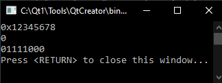

Nhập một số nguyên từ bàn phím.Đếm số bit bằng 1 của số này và đưa nó lên màn hình.
Định dạng đầu vào:Số nguyên dương giá trị 4 byte(hệ thập lục phân)
Định dạng đầu ra:số bit của số bằng 1.
Ví dụ (dòng đầu tiên là đầu vào của chuỗi nguồn, dòng thứ hai là đầu ra của kết quả).
#include <iostream> using namespace std; int main() { unsigned int x; cin >> hex >> x; int count = 0; for(int i=1;i<=32;i++) if (x &(1 << i)) count++; cout << count << endl; return 0; }